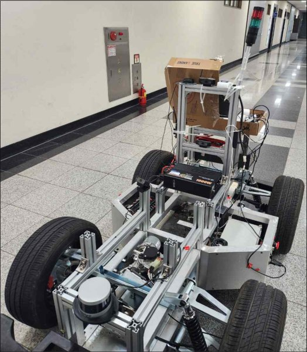
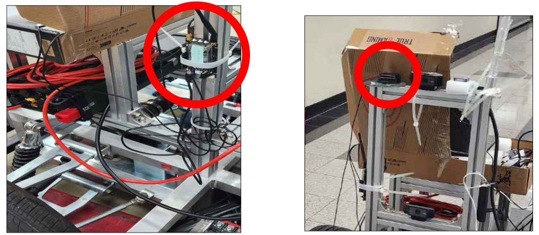
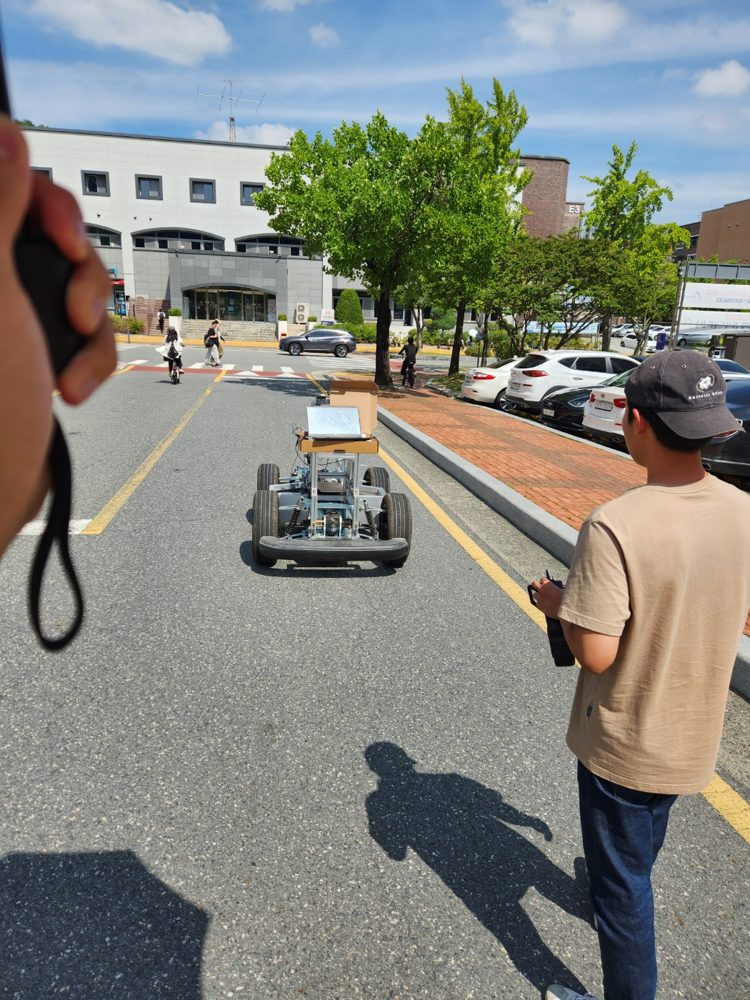
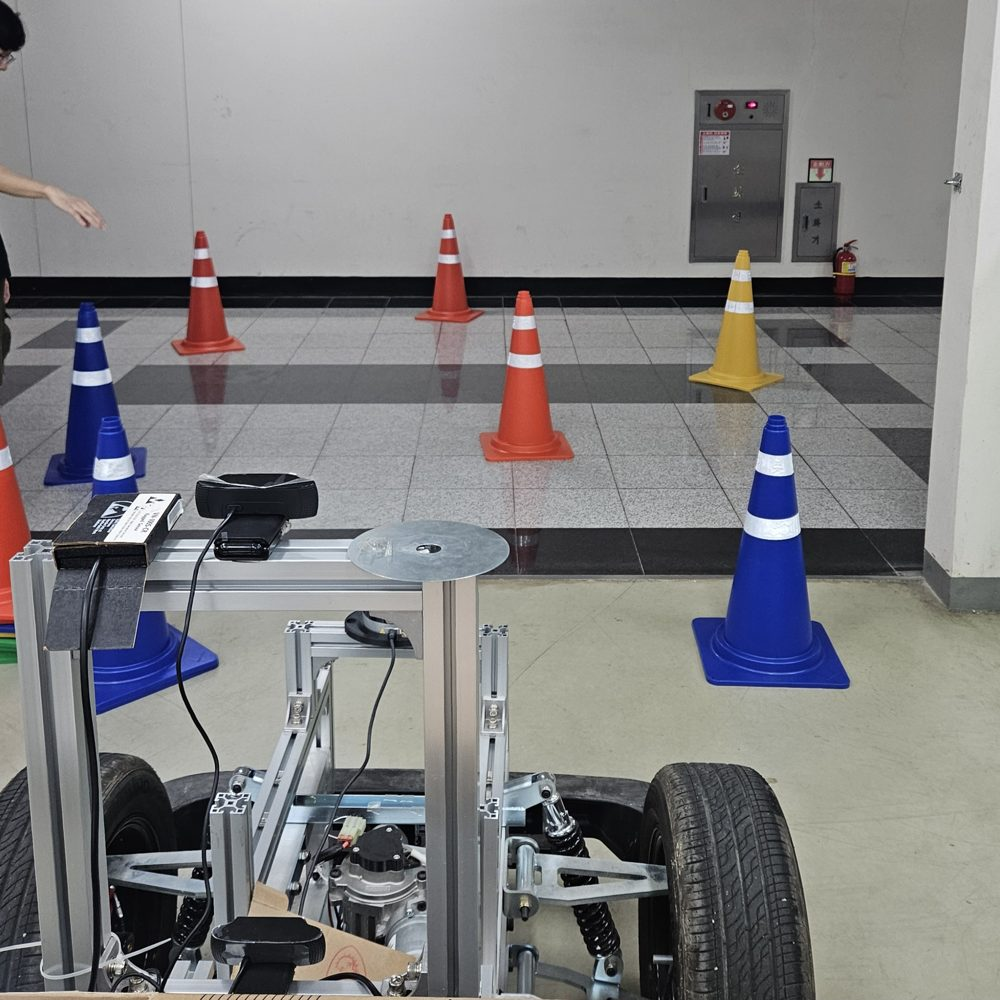

한눈에 보기
- 주행 중 인지 모듈(카메라·LiDAR로 주변을 알아보는 기능) 일부가 빠져도 차량이 멈추지 않고 경로를 유지해 완주하는 자율주행 시스템을 목표로 삼았습니다.
- 대회는 예선 10분·본선 15분의 단일 주행으로 도로 경로 주행·장애물 우회·신호등 인식·돌발 장애물 정지 미션을 통과하며 기록을 겨루는 실차 대회입니다.
- 3인 팀의 팀장으로 ERP42 4륜 전기차와 LiDAR(레이저로 주변 거리를 재는 센서)·RTK-GPS(보정 신호로 오차를 줄인 GPS)·IMU(기울기·가속도 센서)를 다뤘습니다.
- 팀은 바퀴 회전량 계산부터 경로추종과 명령 중재까지 주행 기반을 단계적으로 쌓았고, 저는 그중 경로점(waypoint)을 따라가는 경로추종과, 여러 주행 명령 중 무엇을 따를지 정하는 판단 노드를 맡았습니다.


▶ 대회 진행 방식 참고 영상 — 우리 팀 시연이 아니라, 예선(트랙 주행·highway 예선 코스)을 통과한 상위 팀만 참가하는 본선 출전 팀들의 주행 영상입니다.
개발 중 알고리즘 테스트 기록 — 대회 주행 영상이 없어 대신 싣는 팀 내부 테스트 자료입니다. ▶ waypoint 추종 및 LiDAR 회피 테스트 영상 (25.04)


진행 과정
주행 기반을 쌓는 동안 두 가지가 막혔습니다.
- GPS가 불안정한 구간: 120m 안팎 터널에서는 GPS가 잡히지 않았고, IMU는 갈수록 오차가 쌓였습니다(drift). 팀은 바퀴 회전량을 IMU·GPS와 EKF(여러 센서 값을 결합해 위치를 추정하는 필터)로 융합해 GPS가 끊기는 구간에 대응했습니다.
- 통제 지점 없는 명령: 인지 모듈마다 조향·속도 명령을 따로 내는데 조율할 곳이 없었습니다. 저는 차선·경로 명령에 우선순위를 두고 오래된 명령은 빼는 판단 노드를 소스 코드 수준 프로토타입으로 만들었습니다. 유효한 명령이 없으면 완전 제동(full-brake)합니다.
실차 시험에서는 다음 문제가 이어졌습니다.
- 카메라 프레임 누락
- 전력 부족 — 보조배터리로 보강
- 진동에 따른 카메라·IMU 자세 변화
- 브레이크 오일 누유
- GNSS(위성 측위 수신기)·ROS2(로봇 프로그램 간 통신 체계) 연결 끊김
팀원들과 튜닝·테스트 주행·rosbag(센서·제어 메시지 기록 도구) 로깅·분석을 반복하며 통신 포트·속도·브레이크 등 설정값을 조정했습니다.
인지 모듈 일부가 빠져도 측위(차량 위치 추정)와 경로추종이 유지되어 완주했습니다(팀 회고 기준). 대회 주행 로그가 남아 있지 않아 정량 지표는 적지 않았습니다.
팀에서 일한 방식
실개발 2~3인의 3인 팀에서 팀장을 맡았습니다.
본인 담당:
- 팀장(개발 일정 수립·공유, 팀원과 함께 쓸 실습 환경 구성, 인수인계 문서화)
- waypoint 경로추종
- 명령 중재 판단 노드
팀원들과 함께:
- 센서 bring-up(센서 연결·첫 구동 점검)
- EKF 센서퓨전 측위
- 실차 테스트·튜닝
배운 점
"무엇이 빠져도 버티는가"를 먼저 설계하고, 성능은 튜닝·테스트·로깅을 반복하며 끌어올린다는 것을 배웠습니다.
인지 기능을 더하기 전에 측위와 경로추종이라는 최소 기반부터 실차에서 다져야 상위 모듈이 빠져도 주행이 이어진다는 점은, 인지 일부가 빠진 채 완주한 경험(팀 회고 기준)으로 확인했습니다.
기술 상세
진행 흐름·경로추종·참고 문서 펼쳐 보기
진행 흐름
- 센서 연결 — USB 카메라·IMU·RTK-GPS·3D LiDAR를 차례로 구동하고 네트워크와 센서 인터페이스를 점검했습니다.
- 25.02 — 바퀴 인코더 신호로 이동거리와 회전각을 계산하는 휠 오도메트리 노드를 팀에서 직접 구현했습니다.
- 25.03 — 경로추종 기법인 Pure Pursuit(앞쪽 목표점을 향해 조향하는 방식)과 Stanley(경로와의 거리·각도 오차를 함께 줄이는 방식)를 학습했습니다.
- 경로추종 설계 — 연구계획서에서 waypoint(경로점) 추종의 조향을 경로와의 방향 오차에 비례해 정하고 저역통과 처리로 흔들림을 줄이는 방식으로 설계했습니다.
- 25.04 — waypoint 추종과 LiDAR 장애물 회피를 테스트 주행으로 확인했습니다.
- 25.07 — 측위·경로추종·차선 인식을 실도로에서 함께 돌리며 전력·진동·통신 끊김 같은 문제의 대응 필요성을 확인하고 포트·주행 설정값을 조정했습니다.
- 이후 — LiDAR 장애물 회피를 2D 스캔 기반에서 3D 점군 클러스터링(가까운 점끼리 묶어 장애물로 보는 처리) 실험으로 넓혔습니다.
곡선에서 튀는 조향 → 경로추종 (본인)
경로추종 방식인 Pure Pursuit·Stanley를 검토한 뒤, 경로와의 방향 오차에 비례해 조향하고 직전 값과 부드럽게 섞는 저역통과 처리로 곡선에서 조향이 튀는 것을 줄였습니다.
명령 중재 판단 노드는 소스 코드 수준의 프로토타입입니다.
참고 문서
코드 근거
- 팀 최종 코드 Erp42_ws — 기술 전체(측위·경로계획·판단·인지·차량 I/O)는 README 참고.